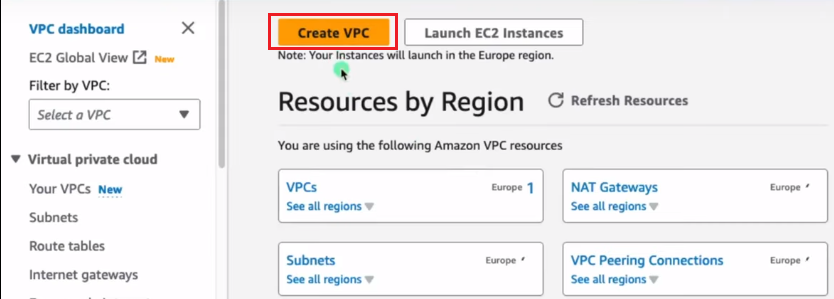
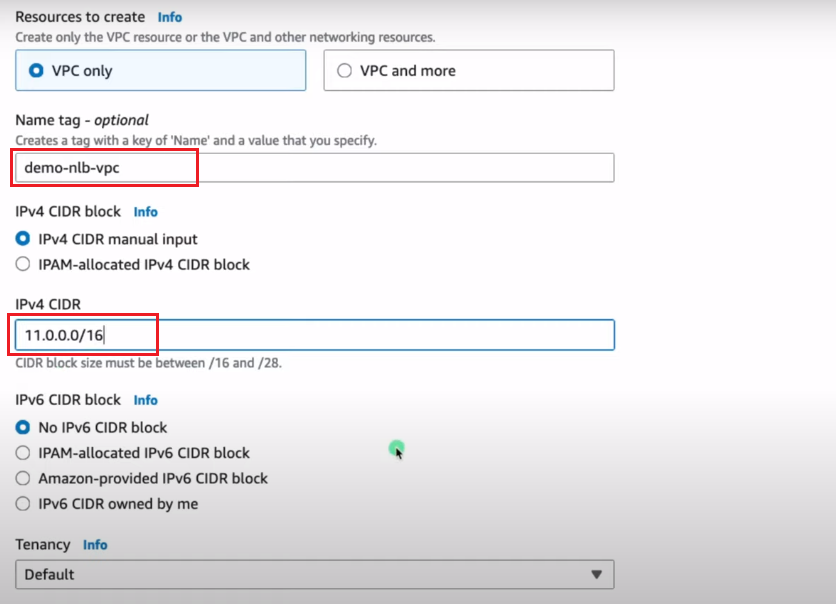

Step 1: Create a Virtual Private Cloud (VPC)
Navigate to the VPC Dashboard:
In the AWS Management Console, go to the VPC Dashboard.
Create a VPC:
- Click on "Create VPC" and follow the wizard. 
- Specify a name for your VPC, define the IP address range (CIDR block). 
- Click on "Create VPC".